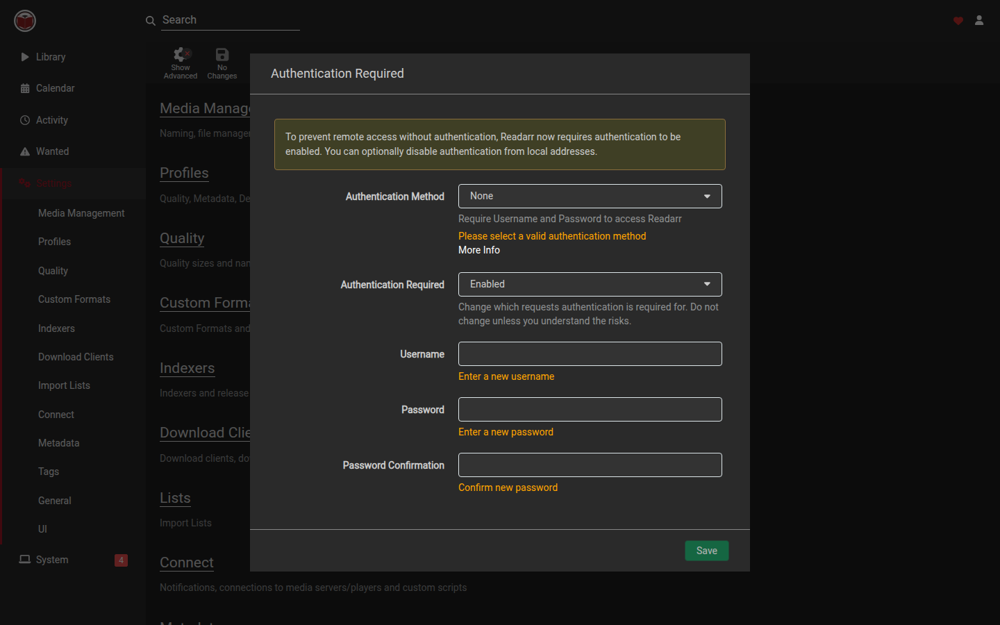

Readarr
Readarr
Settings
Open Settings from the sidebar. The hub page lists (in order): Media Management, Profiles, Quality, Custom Formats, Indexers, Download Clients, Lists, Connect, then further down Metadata, Tags, General, UI, and Development.

The Settings sidebar children are: Media Management, Profiles, Quality, Custom Formats, Indexers, Download Clients, Import Lists, Connect, Metadata, Tags, General, UI.